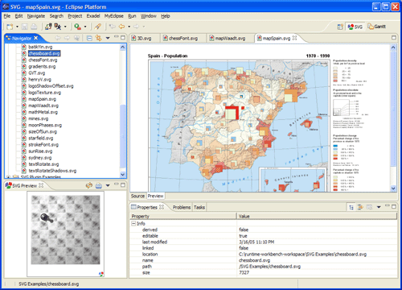
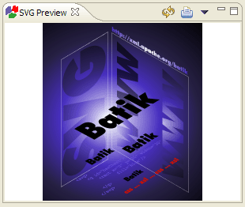

Viewing SVG Files
The best way to work with SVG files is to switch to the SVG perspective.
This can be done by using the menu item 'Window / Open Perspective / Other ...'
Select the entry 'SVG' in the dialog that becomes visible.
The perspective that comes up provides a preconfigured layout of various views that are
most relevant when working with SVG files.

The 'SVG Preview' view is a specialized view that renders SVG files in such a way that
the file's entire content is visible. The view does not offer scrollbars if the image can not
be scaled down to the view's canvas size.
